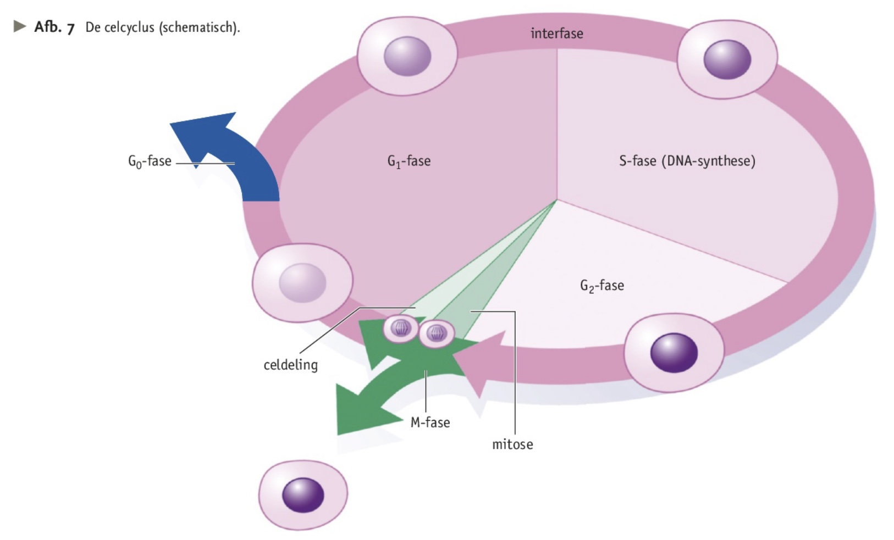
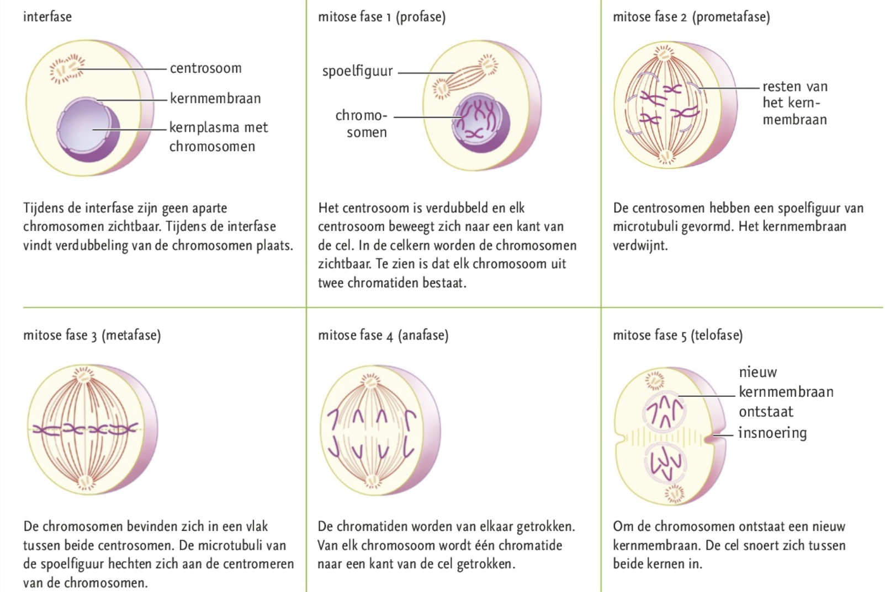

Je kunt de gebeurtenissen tijdens de celcyclus beschrijven en toepassen.
Je weet dat door ongeslachtelijke voortplanting nakomelingen ontstaan die identiek zijn aan de ouder.
Je kunt standpunten over klonen van organismen toelichten met ethische en biologische argumenten.


Celdeling
Cellen kunnen zich voortplanten door celdeling, zo ontstaan er uit een moedercel twee identieke dochtercellen.
Op natuurlijke wijze
Bij ongeslachtelijke voortplanting ontstaan door celdeling nakomelingen die genetisch identiek zijn aan de ouder.
Op kunstmatige wijze
Bij stekken snijd je een stuk van en stengel of blad af. Uit het snijvlak komen nieuwe wortels en zo kan een nieuwe plant ontstaan. Je kan ook in een lab weefsels kweken. Een organisme dat door ongeslachtelijke voortplanting uit één ouder is ontstaan, noem je een kloon.
Celcyclus
De erfelijke eigenschappen van een organisme liggen vast in het DNA. Voor de celdeling wordt het DNA gekopieerd. Aan het begin van een celdeling spiraliseren de chromosomen (nu zichtbaar onder microscoop). Na de celdeling ontrollen ze weer. Bij planten, schimmels en dieren begint de celdeling met mitose (kerndeling). Na de mitose snoert de cel in en ontstaan er twee nieuwe cellen. Daarna ontstaat er door plasmagroei nieuw cytoplasma en komen er meer celorganellen.
De M-fase is de periode waarin de kerndeling en celdeling plaatsvinden. De periode tussen twee celdelingen heet een interfase. In de S-fase wordt van elk DNA-molecuul een replica gemaakt (DNA-replicatie/synthese). De plaats waar het kopje vast zit aan het DNA noem je het centromeer. Zo lang ze aan elkaar vastzitten, heten ze chromatiden. Na de S-fase bestaat een chromosoom dus uit twee chromatiden. Als een cel in rust is, noem je dit de Go-fase.
Mitose
Het centrosoom (spoellichaampje) is een gebied waarin bij dierlijke cellen twee cetriolen (kleine cilindertjes van eiwitbuisjes) liggen.
Klonen
Klonen worden gebruikt om gunstige erfelijke eigenschappen te behouden, menselijke ziektes te onderzoeken of om medicijnen te testen. Dieren kunnen kunstmatig worden gekloond door embryosplitsing en celkerntransplantatie. �